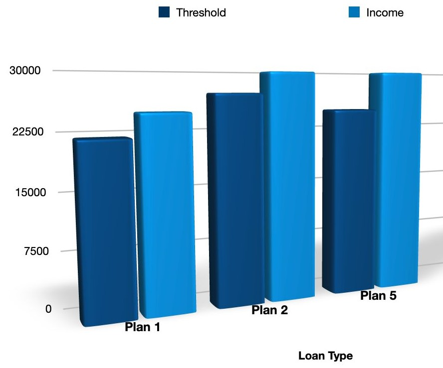

How much interest do you pay on your student loan? 🤔
If you are a student in England, you can borrow money from the government to help you pay for your studies. This is called a student loan. You have to pay back this money with some extra money on top. This extra money is called interest. The amount of interest you pay depends on different things, such as:
- When you started your course
- How much money you make after you finish your course
- The current inflation rate (how much prices are going up)
You can check the current inflation rate here.
Another thing to note is that the government can step in and cap the interest rate if it gets too high. For instance, the interest rate as of writing is capped to 7.6%.
There are different types of student loans, and they all have different rules.
Plan 1 loans 📚
These are for students who started their course before September 2012 in England, Wales or at any time in Northern Ireland. The interest rate on these loans is either:
- Retail Price Index (RPI), which is the change in the prices of products
- Or 1% + base rate, which is the interest rate that the Bank of England charges other banks
The one which is lower is applied. The interest rate changes every year on the 1st of September. You only start paying back your loan when you make more than £22,015 a year.
Plan 2 loans 🎓
These are for students who started their course on or after September 2012 in England or Wales. The interest rate on these loans is:
- RPI + 3% while you are studying
- After you finish your course, the interest rate changes depending on how much money you make. If you earn less than the threshold, the interest rate is the same as the RPI. If you earn more than £49,130 the interest rate is RPI + 3%. If you earn more than the threshold but less than £49,130 the interest rate is inbetween RPI and RPI + 3% depending on how much money you make.
The interest rate changes every year on the 1st of September. You only start paying back your loan when you make more than £27,295 a year.
Plan 5 loans 🆕
These are for students who will start an undergraduate course on or after September 2023 in England. The interest rate on these loans is always the same as the RPI. The interest rate changes every year on the 1st of September. You only start paying back your loan when you make more than £25,000 a year.
How interest affects the size of your debt 💰
Interest is added to your student loan every month, meaning that your loan gets bigger and bigger over time. Some people may never pay off their loan completely, because the interest keeps adding up. This can affect your future plans, such as buying a house or saving for retirement. In certain cases, you may end up paying back more than you borrowed if you earn much more than the threshold.
If you want to get a rough idea of how much interest will affect your student loan, you can use the online calculator on this website. You can also find out more information about student loans and interest rates on the Student Finance England website.